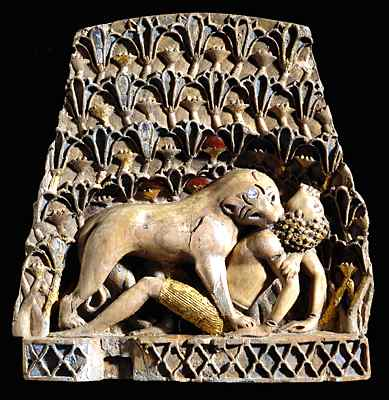

The Challenge -
Ivory carving

This is one of a pair which was originally part of a piece of furniture. It was inlaid with coloured stones and covered with precious metal. Small gold pegs are fixed into the ivory to make the boy's hair while thin sheets of gold represent his kilt.
To learn more about this kind of decoration visit Palaces Explore.
|
|